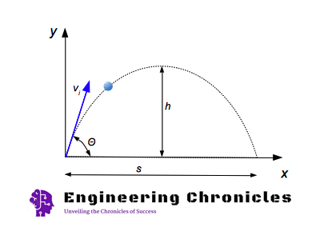

Results

Projectile Motion Formulas
Time to Reach Maximum Height
The time for a projectile - a bullet, a ball, or a stone, or something similar - thrown out with an angle Θ to the horizontal plane - to reach the maximum height can be calculated as:
th = vi * sin(Θ) / ag (1)
where:
- th = time to reach maximum height (s)
- vi = initial velocity of the projectile (m/s, ft/s)
- Θ = the initial angle of the velocity vector to the horizontal plane (degrees)
- ag = acceleration of gravity (9.81 m/s2, 32.174 ft/s2)
Total Flight Time
The total flight time can be expressed as:
ts = 2 * th (2)
where:
- ts = time for the total flight (s)
Maximum Elevation
The maximum elevation (h) of the flight can be calculated as:
h = 1/2 * ag * th2 (3)
where:
- h = flight maximum elevation (m, ft)
Horizontal Distance of the Flight
The horizontal distance of the flight can be expressed as:
s = vi2 * sin(2Θ) / ag (4)
where:
- s = flight distance (m, ft)